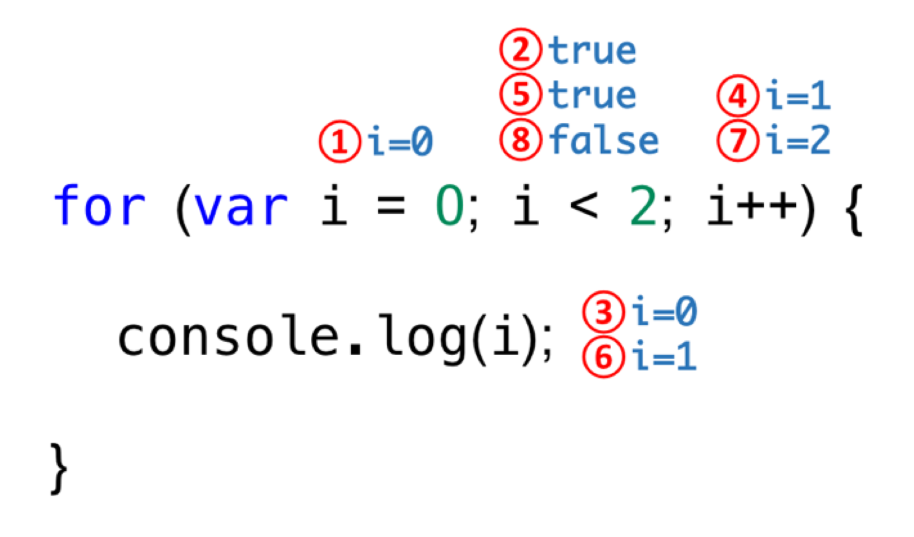

블록문(block statement/compound statement)는 0개 이상의 문을 중괄호로 묶은 것으로, 코드 블록 또는 블록이라고 부르기도 한다. 자바스크립트는 블록문을 하나의 실행 단위로 취급한다. 블록문은 단독으로 사용할 수도 있으나 일반적으로 제어문이나 함수를 정의할 때 사용하는 것이 일반적이다.
문의 끝에는 세미 콜론(;)을 붙이는 것이 일반적이지만, 블록문은 자체 종결성(self closing)을 갖기 때문에 블록문의 끝에는 세미콜론을 붙이지 않는다는 것에 주의하자.
종류
조건문 : if else문, switch문
반복문: for문, while문, do-while문
기타: break문, continue문
1) 조건문
1.1. if…else문
1 2 3 4 5
if (조건식) { // 조건식이 참이면 이 코드 블록이 실행된다. } else { // 조건식이 거짓이면 이 코드 블록이 실행된다. }
1 2 3 4 5 6 7
if (조건식1) { // 조건식1이 참이면 이 코드 블록이 실행된다. } elseif (조건식2) { // 조건식2가 참이면 이 코드 블록이 실행된다. } else { // 조건식1과 조건식2가 모두 거짓이면 이 코드 블록이 실행된다. }
조건식은 불리언타입(T/F)으로 평가되어야 한다. 만약 if 문의 조건식이 불리언 값이 아닌 값으로 평가되면 자바스크립트 엔진에 의해 암묵적으로 타입변환 되어 평가된다.
else문과 else if문은 옵션
만약 코드 블록 내의 문이 하나뿐이라면 중괄호를 생략할 수 있다.
대부분의 if…else문은 삼항연산자로 바꿔 쓸 수 있다. 📒 삼항연산자 : 조건식 ? 참이면 이 코드 실행 : 거짓이면 이 코드 실행
경우의 수가 3가지인 경우에도 다음과 같이 삼항연산자를 사용할 수 있다.
1 2 3 4 5 6
var num = 2;
// 0은 false로 취급된다. var kind = num ? (num > 0 ? '양수' : '음수') : '영';
console.log(kind); // 양수
1.2 switch문
switch 문은 논리적 참, 거짓보다는 다양한 상황(case)에 따라 실행할 코드 블록을 결정할 때 사용한다.
조건식은 주로 변수가 많다.
if문으로 해결할 수 있다면 if문을 사용하는 게 더 좋지만, 조건이 많은 경우에는 switch문이 더 가독성이 좋다.
🔴주의: break문이 선언되지 않으면 멈추지 않고 계속 수행됨(fall through)
해당하는 조건이 없는 경우를 대비해 default문을 넣어준다. (선택사항) default문은 break 필요 없음
1 2 3 4 5 6 7 8 9 10
switch (표현식) { case 표현식1: 표현식과 표현식1이 일치하면 실행될 문; break; case 표현식2: 표현식과 표현식2가 일치하면 실행될 문; break; default: 문의 표현식과 일치하는 표현식을 갖는 case 문이 없을 때 실행될 문;; }
2) 반복문
반복문에서는 무한반복으로 인해 교착상태에 빠지지 않도록 조건을 잘 점검할 것!
2.1 for문
1 2 3
for (초기값; 조건식; 증감식) { 실행문; }
1 2 3 4
for (처음(1); 조건(2),끝(4){ 실행(3) } 조건이 true면 3,4 계속 반복
예제
1 2 3 4 5
for (var i = 0; i < 2; i++) { console.log(i); } // 0 // 1
for문 해석 순서
for 문 내에 for 문을 중첩해 사용할 수 있다.
2.2 while문
조건이 참(true)일때까지 블록 수행
while문은 반복 횟수를 모를 때 사용한다. for문은 반복 횟수를 알 때 사용하므로 먼저 for문을 사용했을 때 코드가 복잡하면 while문을 사용해보자.
적어도 한 번 수행하고 나서 조건식을 평가한다. ex) 네이버 검색시 카페회원 아니어도 검색글 한 번은 읽기 가능
1 2 3 4
do { 실행문; 증감식; } while (조건);
1 2 3 4 5 6 7
var count = 0;
// count가 3보다 작을 때까지 코드 블록을 계속 반복 실행한다. do { console.log(count); count++; } while (count < 3); // 0 1 2
3. 기타
3.1. break문
선언된 곳의 블록에서 탈출 - 레이블문, 반복문, switch문
📒 레이블 문 : 식별자가 붙은 문
1 2 3 4 5 6 7 8 9 10
var str = 'abcddddddefg'; var res = false;
// str에 'd'가 있는지 확인 for (var i = 0; i <str.lenth; i++){ if (str[i] === 'd') res = ture; // 만약 break가 없으면 불필요한 반복이 일어난다.('d'의 갯수가 아닌 'd'유무만 확인하면 되므로) break; } console.log(res); //true
3.2 continue문
반복문의 코드 블록 실행을 현 지점에서 중단하고 반복문의 증감식으로 실행 흐름을 이동
1 2 3 4 5 6 7 8 9 10 11 12
var string = 'Hello World.'; var search = 'l'; var count = 0;
// 문자열은 유사배열이므로 for 문으로 순회할 수 있다. for (var i = 0; i < string.length; i++) { // 'l'이 아니면 현 지점에서 실행을 중단하고 반복문의 증감식으로 이동한다. if (string[i] !== search) continue; count++; // continue 문이 실행되면 이 문은 실행되지 않는다. }